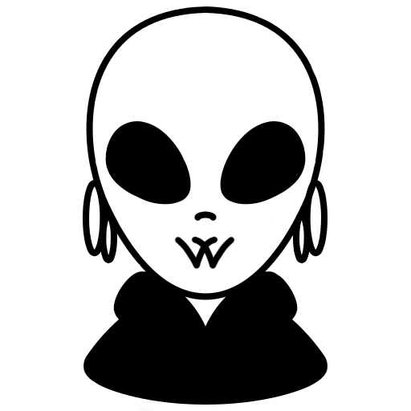

Adrián Borrageiros Mourelos

Desde que era pequeño siempre me ha apasionado construir y crear cosas.
Empecé a jugar con la electrónica cuando tenía 5 años por vocación de mi padre,
lo que dió pie a trastear con ordenadores en los siguientes años de mi vida por mi cuenta.
Siempre quise hacer algo que me permitiera mezclar mis lados técnicos y creativos,
con lo que me saqué el título de Técnico en sistemas microinformáticos y redes.
Suelo ser bastante diverso en cuanto a enfoque informático, en aquella época de mi vida me atraía más el hardware,
la configuración red y sobre todo cualquier clase de servidor;
ahora me gustaría más enfocarme en desarrollo.
Condiciones